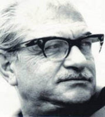

(1910 – 1973)

Türkiye'nin siyasal, toplumsal ve kültürel yapısı üzerine en çok kafa yoran, yazdığı romanlarda sürekli yeni tezler ileri süren Kemal Tahir, gerek romanları gerekse büyük tartışmalar yaratan düşünce yazılarıyla Türk edebiyatının üzerinde en çok konuşulan yazarlarından biri olmuştur.
Asıl adı "İsmail Kemalettin Demir" olan Kemal Tahir, 15 Nisan 1910'da İstanbul'da Abdülhamit'in yaverlerinden Yüzbaşı Tahir Bey'in oğlu olarak doğdu. Galatasaray Lisesi'ndeki öğrenimini yarım bırakıp avukat katipliği ve Zonguldak'taki kömür işletmelerinde ambar memurluğu yaptı. 1930'da İstanbul'a döndü.
1938'de, siyasi görüşleri nedeniyle "Bahriye Olayı" diye bilinen davanın sanıklarından biri olarak Donanma Komutanlığı Mahkemesi'nde yargılandı; askeri isyana teşvik etmekle suçlanıp on beş yıl ağır hapis cezasına çarptırıldı. Sonra Göl İnsanları'na alacağı iki öyküsünü hapisteyken "Cemalettin Mahir" takma adıyla Tan'da yayımladı. Çıktıktan sonra da çeşitli adlar kullanarak serüven romanları yazmayı sürdürdü. "F.M. İkinci" imzasıyla yayımladığı Mayk Hammer dedektiflik romanlarından bazılarını kendisi yazdı.
1955'te kendi adını kullanarak yayımladığı tek öykü kitabı Göl İnsanları, ilgiyle karşılandı. Bu kitabı, konularını köy ve kasaba yaşamından alan Anadolu romanları ve yakın tarihi olayları işleyen kent romanları izledi. Körduman, Bedri Eser, Samim Aşkın, F. M. İkinci, Nurettin Demir, Ali Gıcırlı gibi takma isimlerle gazetelere tefrika aşk ve macera romanları yazdı, Fransızcadan çeviriler yaptı. Yaklaşık on dört ay boyunca, Aziz Nesin ile birlikte kurdukları Düşün Yayınevi'ni yönetti. Metin Erksan, Halit Refiğ, Atıf Yılmaz gibi yönetmenlerle senaryo çalışmaları yaptı.
Romanın acı çeken insanları anlattığını söyleyen Kemal Tahir, tarih ve toplum yorumuyla örtüşen, kendine özgü bir roman anlayışı geliştirmeye çalıştı. Ona göre Türk toplumu, Batı toplumlarına benzemiyordu. Çünkü tarih içindeki gelişimi, Batı'nın klasik gelişim çizgisinden farklıydı. Osmanlı toplumu Batı'nın sınıflı toplumlarına benzemiyordu, o hâlde Türk romanı kendi toplumsal yapısının gerçekliğini yansıtmalıydı. Köy romanlarının ilki Sağırdere (1955) ve onun devamı olan Körduman'da (1957) Çorum'un Yamören köyünden Kamil'in serüvenini merkez alarak köylünün sorunlarını, etik değerlerini, köyün ekonomik yapısını, tarih içindeki bağlarından koparmadan sergiledi. Rahmet Yolları Kesti'de (1957) eşkıyalık olgusuna eğildi. Yedi Çınar Yaylası (1958), Köyün Kamburu (1959), Büyük Mal (1970) üçlemesinde köylünün günlük hayatını, ağa, eşraf sömürüsünü mütareke döneminden cumhuriyete uzanan tarihsel fonda ele aldı. Özellikle Büyük Mal'da köylünün cinsel yaşamına ilişkin ayrıntıların altını çizdi.
Yakın tarihin olaylarını konu edindiği kent romanlarında toplumumuzun batılılaşma sürecine ilişkin yorum ve eleştirileriyle tartışma yarattı. Esir Şehrin İnsanları (1956) ve Esir Şehrin Mahpusu'nda (1962) Mütareke dönemini, Kurtuluş Savaşı'nın bir Osmanlı paşazadesi üzerindeki değiştirici etkisini; Yorgun Savaşçı'da (1965) İttihatçılarla milli mücadele yanlısı güçler arasındaki çatışmayı; Kurt Kanunu'nda (1969) İzmir Suikasti'ni; Yol Ayrımı'nda (1971) Serbest Fırka olayını anlattı.
Kemal Tahir, sadece edebiyatın kendine özgü anlatım aracını değil toplumsal bilimlerin anlatım aracını da kullandı. Asya Tipi Üretim Tarzı'na ilişkin düşüncelerini ortaya koyduğu Devlet Ana (1967), üzerinde en çok konuşulan, en fazla tartışma yaratan kitabı oldu. Yorgun Savaşçı'yla "Yunus Nadi Ödülü"nü, Devlet Ana'yla "Türk Dil Kurumu Ödülü"nü alan Kemal Tahir'in hapishane anılarından yola çıkarak yazdığı Namusçular, Karılar Koğuşu, Dam Ağası, Bir Mülkiyet Kalesi ve Hür Şehrin İnsanları gibi roman taslakları ölümünden sonra basıldı. 1968'de SSCB'ye giden Kemal Tahir, Anadolu'ya uygun bir sol düşünce oluşturmaya çalıştı. Romanlarının ana damarını oluşturan toplum ve tarih tezleri nedeniyle uzunca bir dönem tartışmaların odağında yer alan Kemal Tahir, 21 Nisan 1973'te geçirdiği kalp krizi sonucu İstanbul'da hayata gözlerini yumdu.
Romanları: Sağırdere (1955), Esir Şehrin İnsanları (1956), Körduman (1957), Rahmet Yolları Kesti (1957), Yedi Çınar Yaylası (1958), Köyün Kamburu (1959), Esir Şehrin Mahpusu (1961), Bozkırdaki Çekirdek (1962), Kelleci Memet (1962), Yorgun Savaşçı (1965), Devlet Ana (1967), Kurt Kanunu (1969), Büyük Mal (1970), Yol Ayrımı (1971), Namusçular (1974), Karılar Koğuşu (1974), Hür Şehrin İnsanları (1976), Dam Ağası (1977), Bir Mülkiyet Kalesi (1977)